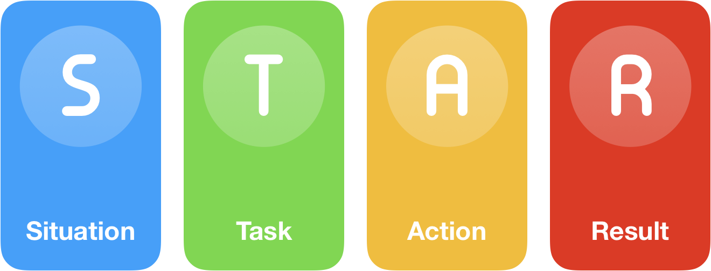

Use the STAR framework
The STAR method is a gold standard in answering behavioral-based interview question by discussing the specific situation, task, action, and result of the situation you are describing.

Situation
Describe the situation that you were in when you needed to accomplish. It can be from your
current job, previous job or from any relevant experience such as volunteer work or college clubs
Task
What goal were you working toward? Describe the challenge and what needs to be done to get
a positive output?
Action
Elaborate the measures you took to address the situation with an appropriate amount of
detail. Describe the precise steps you took and the contribution. Talk about yourself rather than the team.
Result
Describe the outcome of your actions in a quantifiable way. Communicate multiple positive
results. If the answers have a negative outcome, they should highlight your resilience or adaptability.